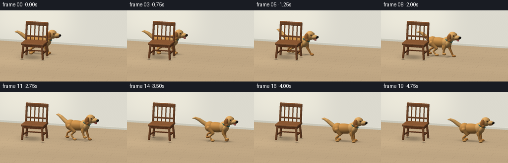
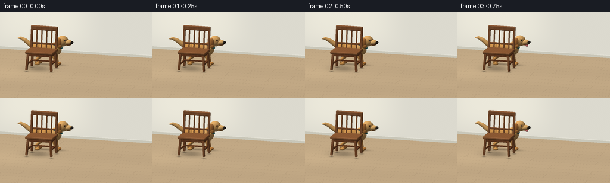

CODING AGENTS AS PIXEL WORLD MODELS
traex/GPT-6.1-Sol · dynamic_spatial_relationship_0005
点击播放 · 原生 RGB 像素
逐轮保存的候选
回放视频、检查图与代码变化。
每份候选均可单独播放。实际图片检查记录在下方工具轨迹中。
候选 01播放与检查图
点击播放 · 原生 RGB 像素


展开代码变化
--- 上一保存版本
+++ 本次保存版本
@@ -0,0 +1,343 @@
+from pathlib import Path
+import math
+import numpy as np
+from PIL import Image
+import artifact_io
+
+ROOT = Path(__file__).resolve().parent
+W,H,S = 256,144,3
+RW,RH = W*S,H*S
+# A small purpose-built triangle renderer; all geometry is generated here.
+TARGET=np.array([.48,.73,0.])
+CAM=np.array([3.0,2.9,9.0])
+FWD=(TARGET-CAM); FWD/=np.linalg.norm(FWD)
+RIGHT=np.cross(FWD,[0.,1.,0.]); RIGHT/=np.linalg.norm(RIGHT)
+UP=np.cross(RIGHT,FWD)
+SCALE=RW/6.35
+LIGHT=np.array([-3.8,6.5,4.0]); LIGHT/=np.linalg.norm(LIGHT)
+Y,X=np.mgrid[:RH,:RW]
+ORIG=CAM+((X-RW/2)/SCALE)[...,None]*RIGHT+((RH/2-Y)/SCALE)[...,None]*UP
+
+def floor_background(shadows):
+ tf=-ORIG[...,1]/FWD[1]
+ tw=(-3.35-ORIG[...,2])/FWD[2]
+ floor=tf<tw
+ t=np.where(floor,tf,tw)
+ pos=ORIG+t[...,None]*FWD
+ x,y,z=pos[...,0],pos[...,1],pos[...,2]
+ # Warm plaster with an unobtrusive pool of window light.
+ wall=np.zeros((RH,RW,3))+np.array([220.,218.,207.])
+ glow=np.exp(-((x+2.1)/2.2)**4-((y-1.9)/1.7)**4)
+ wall+=glow[...,None]*np.array([16.,15.,12.])
+ wall+=(np.sin(x*73+np.sin(y*23))*np.sin(y*81)*.35)[...,None]
+ board=np.floor((z+3.35)/.57)
+ grain=1.8*np.sin(x*33+2*np.sin(z*42))+1.1*np.sin(x*85+z*21)
+ grain+=1.8*np.sin(board*7.3)
+ fl=np.zeros((RH,RW,3))+np.array([192.,167.,132.])
+ fl+=grain[...,None]*np.array([1.,.9,.7])
+ edge=np.abs(((z+3.35)/.57)%1-.5)
+ seam=np.clip((edge-.487)*220,0,1)
+ joint=np.minimum(((x+board*.85)%2.8),2.8-((x+board*.85)%2.8))
+ seam=np.maximum(seam,np.exp(-(joint/.013)**2)*.7)
+ fl-=seam[...,None]*np.array([17.,16.,13.])
+ # Grounded soft shadows, derived from the heights of the objects.
+ shade=np.zeros_like(x)
+ for sx,sz,rx,rz,opacity in shadows:
+ d=((x-sx)/rx)**2+((z-sz)/rz)**2
+ shade+=opacity*np.exp(-d*1.8)
+ shade=np.minimum(shade,.61)
+ fl*=1-shade[...,None]
+ fl+=np.exp(-((x+2.3)/1.8)**2-((z-.4)/1.8)**2)[...,None]*np.array([9.,8.,6.])
+ # Skirting board, at the back wall.
+ base=(y<.105)&(~floor)
+ wall[base]=[201.,199.,185.]
+ trim=(y>.102)&(y<.12)&(~floor)
+ wall[trim]=[231.,229.,218.]
+ image=np.where(floor[...,None],fl,wall)
+ return np.clip(image,0,255).astype(np.float32),t.astype(np.float32)
+
+class Render:
+ def __init__(self,shadows):
+ self.img,self.depth=floor_background(shadows)
+ def mesh(self,verts,norms,faces,color,mat='plain'):
+ verts=np.asarray(verts); norms=np.asarray(norms)
+ rel=verts-CAM
+ projected=np.stack([RW/2+rel@RIGHT*SCALE,RH/2-rel@UP*SCALE,rel@FWD],axis=1)
+ color=np.asarray(color,float)
+ for ids in faces:
+ q=projected[ids]
+ n=norms[ids]
+ if np.mean(n,axis=0)@(-FWD)<=-.02: continue
+ lo=np.maximum(np.floor(q[:,:2].min(axis=0)).astype(int),[0,0])
+ hi=np.minimum(np.ceil(q[:,:2].max(axis=0)).astype(int),[RW-1,RH-1])
+ if np.any(hi<lo): continue
+ x0,y0=lo; x1,y1=hi
+ xx,yy=np.meshgrid(np.arange(x0,x1+1)+.5,np.arange(y0,y1+1)+.5)
+ a,b,c=q
+ den=(b[1]-c[1])*(a[0]-c[0])+(c[0]-b[0])*(a[1]-c[1])
+ if abs(den)<1e-9: continue
+ u=((b[1]-c[1])*(xx-c[0])+(c[0]-b[0])*(yy-c[1]))/den
+ v=((c[1]-a[1])*(xx-c[0])+(a[0]-c[0])*(yy-c[1]))/den
+ w=1-u-v
+ depth=u*a[2]+v*b[2]+w*c[2]
+ buffer=self.depth[y0:y1+1,x0:x1+1]
+ mask=(u>=-1e-6)&(v>=-1e-6)&(w>=-1e-6)&(depth<buffer)
+ if not np.any(mask): continue
+ uu,vv,ww=u[mask],v[mask],w[mask]
+ nn=uu[:,None]*n[0]+vv[:,None]*n[1]+ww[:,None]*n[2]
+ nn/=np.maximum(np.linalg.norm(nn,axis=1,keepdims=True),1e-8)
+ lam=np.maximum(nn@LIGHT,0)
+ ambient=.48+.10*nn[:,1]
+ brightness=ambient+.48*lam
+ rgb=brightness[:,None]*color
+ if mat in ['fur','wood']:
+ pp=uu[:,None]*verts[ids[0]]+vv[:,None]*verts[ids[1]]+ww[:,None]*verts[ids[2]]
+ if mat=='fur':
+ noise=np.sin(pp[:,0]*210+np.sin(pp[:,1]*180+pp[:,2]*48)*2)*np.sin(pp[:,2]*240+pp[:,1]*92)
+ rgb+=noise[:,None]*2.4
+ rgb+=np.maximum(nn[:,1],0)[:,None]*np.array([10.,8.,4.])
+ else:
+ noise=np.sin(pp[:,1]*3+pp[:,2]*130+np.sin(pp[:,0]*9)*3)+.45*np.sin(pp[:,0]*60+pp[:,1]*6)
+ rgb+=noise[:,None]*3
+ half=LIGHT-FWD; half/=np.linalg.norm(half)
+ gloss=np.maximum(nn@half,0)**(65 if mat=='eye' else 24)
+ strength=75 if mat=='eye' else (16 if mat=='wood' else 7)
+ rgb+=gloss[:,None]*strength
+ self.img[y0:y1+1,x0:x1+1][mask]=np.clip(rgb,0,255)
+ buffer[mask]=depth[mask]
+
+# Cached smooth ellipsoid topology.
+def unit_sphere(n=24,m=14):
+ vertices=[]
+ for j in range(m+1):
+ a=math.pi*j/m
+ for i in range(n):
+ b=2*math.pi*i/n
+ vertices.append([math.sin(a)*math.cos(b),math.cos(a),math.sin(a)*math.sin(b)])
+ faces=[]
+ for j in range(m):
+ for i in range(n):
+ a=j*n+i; b=j*n+(i+1)%n; c=(j+1)*n+i; d=(j+1)*n+(i+1)%n
+ faces.extend([[a,c,b],[b,c,d]])
+ return np.array(vertices),np.array(faces)
+SP, SF=unit_sphere()
+SM,SMF=unit_sphere(16,10)
+
+def rz(angle):
+ c,s=np.cos(angle),np.sin(angle)
+ return np.array([[c,-s,0],[s,c,0],[0,0,1.]])
+
+def axis_matrix(axis):
+ yy=np.asarray(axis,float); yy/=np.linalg.norm(yy)
+ helper=np.array([0.,0.,1.]) if abs(yy[2])<.9 else np.array([1.,0.,0.])
+ xx=np.cross(yy,helper); xx/=np.linalg.norm(xx)
+ zz=np.cross(xx,yy)
+ return np.stack([xx,yy,zz],axis=1)
+
+def ell(r,center,radii,color,mat='plain',rot=None,small=False):
+ sp,faces=(SM,SMF) if small else (SP,SF)
+ rot=np.eye(3) if rot is None else rot
+ rad=np.asarray(radii)
+ v=(sp*rad)@rot.T+center
+ n=(sp/rad)@rot.T; n/=np.linalg.norm(n,axis=1,keepdims=True)
+ r.mesh(v,n,faces,color,mat)
+
+def bone(r,a,b,ra,rb,color,mat='plain'):
+ a,b=np.asarray(a),np.asarray(b)
+ rotation=axis_matrix(b-a)
+ n=16
+ vs=[]; ns=[]
+ length=np.linalg.norm(b-a)
+ for center,rad in [(a,ra),(b,rb)]:
+ for i in range(n):
+ theta=2*np.pi*i/n
+ dr=np.array([np.cos(theta),0,np.sin(theta)])@rotation.T
+ vs.append(center+dr*rad)
+ no=dr+(ra-rb)/length*rotation[:,1]
+ ns.append(no/np.linalg.norm(no))
+ faces=[]
+ for i in range(n):
+ j=(i+1)%n
+ faces.extend([[i,j,n+i],[j,n+j,n+i]])
+ r.mesh(vs,ns,np.array(faces),color,mat)
+ ell(r,a,[ra]*3,color,mat,small=True)
+ ell(r,b,[rb]*3,color,mat,small=True)
+
+def rounded_box(r,center,half,color,bevel=.025,rot=None):
+ rot=np.eye(3) if rot is None else rot
+ half=np.asarray(half); center=np.asarray(center)
+ verts=[]; normals=[]; faces=[]
+ # Six rounded surfaces of a cuboid.
+ for axis in range(3):
+ other=[i for i in range(3) if i!=axis]
+ for sign in [-1,1]:
+ start=len(verts)
+ grids=[]
+ for k in other:
+ h=half[k]; b=min(bevel,h*.8)
+ grids.append([-h,-h+b,0,h-b,h])
+ for x in grids[0]:
+ for y in grids[1]:
+ p=np.zeros(3); p[axis]=sign*half[axis]; p[other[0]]=x; p[other[1]]=y
+ inner=np.clip(p,-half+bevel,half-bevel)
+ d=p-inner; d/=np.linalg.norm(d)
+ verts.append((inner+d*bevel)@rot.T+center)
+ normals.append(d@rot.T)
+ for i in range(4):
+ for j in range(4):
+ a=start+i*5+j; b=a+5
+ faces.extend([[a,b,a+1],[a+1,b,b+1]])
+ r.mesh(verts,normals,np.array(faces),color,'wood')
+
+def chair(r):
+ cx=-1.02
+ wood=[132,82,48]; edge=[119,69,39]
+ # A sturdy walnut dining chair, including all four feet and stretchers.
+ for x in [-.48,.48]:
+ for z in [-.34,.34]:
+ bottom=np.array([cx+x*1.12,.055,z*1.22])
+ top=np.array([cx+x,.80,z])
+ rot=axis_matrix(top-bottom)
+ rounded_box(r,(top+bottom)/2,[.047,np.linalg.norm(top-bottom)/2,.046],wood,.012,rot)
+ for x in [-.49,.49]:
+ rounded_box(r,[cx+x,.32,0],[.028,.032,.34],edge,.009)
+ rounded_box(r,[cx,.31,-.355],[.48,.029,.026],edge,.008)
+ # Apron around the seat.
+ for z in [-.32,.32]:
+ rounded_box(r,[cx,.705,z],[.505,.066,.028],edge,.010)
+ for x in [-.49,.49]:
+ rounded_box(r,[cx+x,.705,0],[.03,.066,.33],edge,.009)
+ rounded_box(r,[cx,.80,0],[.60,.058,.45],[146,93,54],.045)
+ # Back posts lean slightly away, with a broad top rail and four open slats.
+ for x in [-.535,.535]:
+ a=np.array([cx+x,.81,-.335]); b=np.array([cx+x,1.72,-.465])
+ rounded_box(r,(a+b)/2,[.046,np.linalg.norm(b-a)/2,.043],wood,.018,axis_matrix(b-a))
+ for x in [-.32,-.105,.105,.32]:
+ a=np.array([cx+x,.87,-.354]); b=np.array([cx+x,1.62,-.455])
+ rounded_box(r,(a+b)/2,[.027,np.linalg.norm(b-a)/2,.027],[141,90,52],.017,axis_matrix(b-a))
+ rounded_box(r,[cx,1.69,-.46],[.585,.095,.055],[144,92,55],.035)
+ rounded_box(r,[cx,1.045,-.381],[.508,.037,.032],wood,.013)
+
+GOLD=[202,144,75]; PALE=[219,167,99]; EAR=[170,110,56]
+
+def dog(r,x,z,t,activity):
+ # Rightward locomotion, with articulated front legs, hocks, and bounding torso.
+ phase=t*2*np.pi/0.69
+ bob=activity*(.037+.045*np.cos(2*phase))
+ pitch=activity*.035*np.sin(phase)
+ yaw=-.15*activity
+ cy,sy=np.cos(yaw),np.sin(yaw)
+ yawmat=np.array([[cy,0,sy],[0,1,0],[-sy,0,cy]])
+ rotation=yawmat@rz(pitch)
+ def P(a): return np.array(a)@rotation.T+np.array([x,bob,z])
+ def E(c,rad,col=GOLD,extra=None,mat='fur',small=False):
+ ell(r,P(c),rad,col,mat,rotation if extra is None else rotation@extra,small)
+ def B(a,b,ra,rb,col=GOLD,mat='fur'):
+ bone(r,P(a),P(b),ra,rb,col,mat)
+ # Far legs appear behind the torso; near legs have a lighter sunlit coat.
+ for side in [-1,1]:
+ sidez=side*.16
+ legcol=[183,123,61] if side<0 else [207,149,80]
+ for front in [False,True]:
+ offset=(0 if front else 2.0)+(0 if side>0 else 2.85)
+ ph=phase+offset
+ swing=activity*np.sin(ph)
+ lift=activity*.155*max(0,np.cos(ph))
+ ground=.065-bob
+ if front:
+ shoulder=[.37,.665,sidez]
+ elbow=[.33+.13*swing,.365,sidez]
+ foot=[.40+.28*swing,ground+lift,sidez+.01]
+ B(shoulder,elbow,.092,.065,legcol)
+ B(elbow,foot,.061,.043,legcol)
+ E([foot[0]+.045,foot[1],foot[2]],[.105,.062,.068],legcol,small=True)
+ E([elbow[0]-.021,elbow[1]+.12,sidez],[.09,.155,.072],legcol,extra=rz(-.13),small=True)
+ else:
+ hip=[-.43,.635,sidez]
+ knee=[-.28+.13*swing,.385,sidez]
+ hock=[-.50+.18*swing,.195+lift*.45,sidez]
+ foot=[-.45+.28*swing,ground+lift,sidez]
+ B(hip,knee,.135,.075,legcol)
+ B(knee,hock,.069,.040,legcol)
+ B(hock,foot,.04,.04,legcol)
+ E([foot[0]+.046,foot[1],foot[2]],[.11,.061,.068],legcol,small=True)
+ E([-.09,.665,0],[.57,.258,.235])
+ E([-.44,.666,0],[.267,.267,.242])
+ E([.32,.705,0],[.255,.286,.246],PALE,extra=rz(-.12))
+ E([.455,.872,0],[.185,.265,.19],PALE,extra=rz(-.45))
+ E([.44,.685,.04],[.16,.215,.22],PALE,extra=rz(-.23))
+ # Fluffy, tapered tail with gentle wag and larger motion during the run.
+ wag=.12*np.sin(t*4.1)+activity*.10*np.sin(phase)
+ tail=[[-.61,.75,0],[-.78,.86,wag*.25],[-.98,1.005,wag*.55],[-1.16,1.09,wag],[-1.28,1.075,wag*1.3]]
+ rs=[.11,.10,.085,.059,.022]
+ for i in range(len(tail)-1): B(tail[i],tail[i+1],rs[i],rs[i+1],PALE)
+ # Dark teal fabric collar and a small brass tag.
+ axis=np.array([.48,.9,0]); torrot=axis_matrix(axis)
+ vs=[]; ns=[]; fs=[]
+ for i in range(32):
+ a=2*np.pi*i/32
+ for j in range(8):
+ b=2*np.pi*j/8
+ p=np.array([(.192+.023*np.cos(b))*np.cos(a),.023*np.sin(b),(.192+.023*np.cos(b))*np.sin(a)])
+ n=np.array([np.cos(b)*np.cos(a),np.sin(b),np.cos(b)*np.sin(a)])
+ vs.append(P(p@torrot.T+np.array([.443,.85,0])))
+ ns.append(n@torrot.T@rotation.T)
+ for i in range(32):
+ for j in range(8):
+ a=i*8+j;b=((i+1)%32)*8+j;c=i*8+(j+1)%8;d=((i+1)%32)*8+(j+1)%8
+ fs.extend([[a,b,c],[c,b,d]])
+ r.mesh(vs,ns,np.array(fs),[32,102,104])
+ E([.493,.761,.205],[.048,.065,.015],[210,168,74],mat='plain',small=True)
+ # Retriever head: round forehead, long pale muzzle, hanging ears, and black nose.
+ E([.65,1.067,0],[.236,.228,.198],PALE,extra=rz(-.09))
+ E([.822,1.017,0],[.245,.119,.146],[227,177,108],extra=rz(.06))
+ # Lower lip and jaw create a fine mouth line, visible on the near side.
+ E([.89,.948,.028],[.157,.026,.111],[82,49,29],small=True)
+ E([.863,.929,.01],[.15,.041,.108],[207,150,82],small=True)
+ if activity>.1:
+ E([.962,.902,.066],[.074,.047,.042],[199,106,104],extra=rz(-.25),mat='plain',small=True)
+ E([1.039,1.026,0],[.069,.060,.11],[36,31,26],mat='eye',small=True)
+ # Nostril, nose shine, and eye catchlights.
+ E([1.066,1.04,.08],[.013,.012,.009],[13,12,11],mat='eye',small=True)
+ for side in [-1,1]:
+ earrot=rz(-.16-activity*.16*np.sin(phase+side))
+ E([.535,1.012,side*.195],[.112,.208,.066],EAR,extra=earrot)
+ E([.57,.88,side*.207],[.087,.092,.058],[178,118,59],extra=earrot,small=True)
+ E([.77,1.13,side*.163],[.049,.040,.023],[160,105,52],small=True)
+ E([.779,1.135,side*.179],[.029,.028,.017],[30,25,20],mat='eye',small=True)
+ E([.786,1.146,side*.192],[.009,.008,.006],[246,239,215],mat='eye',small=True)
+ # Soft raised eyebrow.
+ E([.759,1.177,side*.147],[.063,.025,.021],PALE,extra=rz(-.12),small=True)
+
+def smooth(q): return q*q*(3-2*q)
+
+def main():
+ frames=[]
+ for i in range(20):
+ t=i/4
+ q=np.clip((t-.75)/3.0,0,1)
+ travel=smooth(q)
+ dx=-1.02+2.88*travel
+ dz=-.95+.57*travel
+ activity=min(1,max(0,(t-.65)/.4))*min(1,max(0,(4.0-t)/.45))
+ shadows=[]
+ # Floor shadows from chair seat, leg contact, and backrest.
+ shadows.append((-1.19,-.10,.70,.58,.25))
+ shadows.append((-1.38,-.53,.64,.32,.13))
+ for x in [-.537,.537]:
+ for z in [-.415,.415]:
+ shadows.append((-1.02+x,z,.105,.095,.34))
+ shadows.append((dx-.18,dz-.12,.68,.29,.27))
+ shadows.append((dx+.49,dz-.13,.30,.24,.14))
+ for x in [-.44,.40]:
+ for z in [-.16,.16]:
+ shadows.append((dx+x,dz+z,.14,.105,.17))
+ r=Render(shadows)
+ chair(r)
+ dog(r,dx,dz,t,activity)
+ frame=Image.fromarray(np.uint8(np.clip(r.img,0,255))).resize((W,H),Image.Resampling.LANCZOS)
+ frames.append(np.asarray(frame))
+ print(f'Frame {i+1}/20',flush=True)
+ artifact_io.save(np.stack(frames),ROOT)
+
+if __name__=='__main__': main()
可观测工具轨迹
实际执行的命令与返回图片。
命令 1exit 0
/bin/bash -lc 'ls -la && cat prompt.txt && cat GENERATION_RULES.md && cat task_spec.json'
命令 2exit 0
/bin/bash -lc "cat artifact_io.py && python - <<'PY' import importlib.util for m in ['numpy','PIL','scipy']: print(m, bool(importlib.util.find_spec(m))) PY"
命令 3exit 0
/bin/bash -lc "cat > generate.py <<'PY'
from pathlib import Path
import math
import numpy as np
from PIL import Image
import artifact_io
ROOT = Path(__file__).resolve().parent
W,H,S = 256,144,3
RW,RH = W*S,H*S
# A small purpose-built triangle renderer; all geometry is generated here.
TARGET=np.array([.48,.73,0.])
CAM=np.array([3.0,2.9,9.0])
FWD=(TARGET-CAM); FWD/=np.linalg.norm(FWD)
RIGHT=np.cross(FWD,[0.,1.,0.]); RIGHT/=np.linalg.norm(RIGHT)
UP=np.cross(RIGHT,FWD)
SCALE=RW/6.35
LIGHT=np.array([-3.8,6.5,4.0]); LIGHT/=np.linalg.norm(LIGHT)
Y,X=np.mgrid[:RH,:RW]
ORIG=CAM+((X-RW/2)/SCALE)[...,None]*RIGHT+((RH/2-Y)/SCALE)[...,None]*UP
def floor_background(shadows):
tf=-ORIG[...,1]/FWD[1]
tw=(-3.35-ORIG[...,2])/FWD[2]
floor=tf<tw
t=np.where(floor,tf,tw)
pos=ORIG+t[...,None]*FWD
x,y,z=pos[...,0],pos[...,1],pos[...,2]
# Warm plaster with an unobtrusive pool of window light.
wall=np.zeros((RH,RW,3))+np.array([220.,218.,207.])
glow=np.exp(-((x+2.1)/2.2)**4-((y-1.9)/1.7)**4)
wall+=glow[...,None]*np.array([16.,15.,12.])
wall+=(np.sin(x*73+np.sin(y*23))*np.sin(y*81)*.35)[...,None]
board=np.floor((z+3.35)/.57)
grain=1.8*np.sin(x*33+2*np.sin(z*42))+1.1*np.sin(x*85+z*21)
grain+=1.8*np.sin(board*7.3)
fl=np.zeros((RH,RW,3))+np.array([192.,167.,132.])
fl+=grain[...,None]*np.array([1.,.9,.7])
edge=np.abs(((z+3.35)/.57)%1-.5)
seam=np.clip((edge-.487)*220,0,1)
joint=np.minimum(((x+board*.85)%2.8),2.8-((x+board*.85)%2.8))
seam=np.maximum(seam,np.exp(-(joint/.013)**2)*.7)
fl-=seam[...,None]*np.array([17.,16.,13.])
# Grounded soft shadows, derived from the heights of the objects.
shade=np.zeros_like(x)
for sx,sz,rx,rz,opacity in shadows:
d=((x-sx)/rx)**2+((z-sz)/rz)**2
shade+=opacity*np.exp(-d*1.8)
shade=np.minimum(shade,.61)
fl*=1-shade[...,None]
fl+=np.exp(-((x+2.3)/1.8)**2-((z-.4)/1.8)**2)[...,None]*np.array([9.,8.,6.])
# Skirting board, at the back wall.
base=(y<.105)&(~floor)
wall[base]=[201.,199.,185.]
trim=(y>.102)&(y<.12)&(~floor)
wall[trim]=[231.,229.,218.]
image=np.where(floor[...,None],fl,wall)
return np.clip(image,0,255).astype(np.float32),t.astype(np.float32)
class Render:
def __init__(self,shadows):
self.img,self.depth=floor_background(shadows)
def mesh(self,verts,norms,faces,color,mat='plain'):
verts=np.asarray(verts); norms=np.asarray(norms)
rel=verts-CAM
projected=np.stack([RW/2+rel@RIGHT*SCALE,RH/2-rel@UP*SCALE,rel@FWD],axis=1)
color=np.asarray(color,float)
for ids in faces:
q=projected[ids]
n=norms[ids]
if np.mean(n,axis=0)@(-FWD)<=-.02: continue
lo=np.maximum(np.floor(q[:,:2].min(axis=0)).astype(int),[0,0])
hi=np.minimum(np.ceil(q[:,:2].max(axis=0)).astype(int),[RW-1,RH-1])
if np.any(hi<lo): continue
x0,y0=lo; x1,y1=hi
xx,yy=np.meshgrid(np.arange(x0,x1+1)+.5,np.arange(y0,y1+1)+.5)
a,b,c=q
den=(b[1]-c[1])*(a[0]-c[0])+(c[0]-b[0])*(a[1]-c[1])
if abs(den)<1e-9: continue
u=((b[1]-c[1])*(xx-c[0])+(c[0]-b[0])*(yy-c[1]))/den
v=((c[1]-a[1])*(xx-c[0])+(a[0]-c[0])*(yy-c[1]))/den
w=1-u-v
depth=u*a[2]+v*b[2]+w*c[2]
buffer=self.depth[y0:y1+1,x0:x1+1]
mask=(u>=-1e-6)&(v>=-1e-6)&(w>=-1e-6)&(depth<buffer)
if not np.any(mask): continue
uu,vv,ww=u[mask],v[mask],w[mask]
nn=uu[:,None]*n[0]+vv[:,None]*n[1]+ww[:,None]*n[2]
nn/=np.maximum(np.linalg.norm(nn,axis=1,keepdims=True),1e-8)
lam=np.maximum(nn@LIGHT,0)
ambient=.48+.10*nn[:,1]
brightness=ambient+.48*lam
rgb=brightness[:,None]*color
if mat in ['fur','wood']:
pp=uu[:,None]*verts[ids[0]]+vv[:,None]*verts[ids[1]]+ww[:,None]*verts[ids[2]]
if mat=='fur':
noise=np.sin(pp[:,0]*210+np.sin(pp[:,1]*180+pp[:,2]*48)*2)*np.sin(pp[:,2]*240+pp[:,1]*92)
rgb+=noise[:,None]*2.4
rgb+=np.maximum(nn[:,1],0)[:,None]*np.array([10.,8.,4.])
else:
noise=np.sin(pp[:,1]*3+pp[:,2]*130+np.sin(pp[:,0]*9)*3)+.45*np.sin(pp[:,0]*60+pp[:,1]*6)
rgb+=noise[:,None]*3
half=LIGHT-FWD; half/=np.linalg.norm(half)
gloss=np.maximum(nn@half,0)**(65 if mat=='eye' else 24)
strength=75 if mat=='eye' else (16 if mat=='wood' else 7)
rgb+=gloss[:,None]*strength
self.img[y0:y1+1,x0:x1+1][mask]=np.clip(rgb,0,255)
buffer[mask]=depth[mask]
# Cached smooth ellipsoid topology.
def unit_sphere(n=24,m=14):
vertices=[]
for j in range(m+1):
a=math.pi*j/m
for i in range(n):
b=2*math.pi*i/n
vertices.append([math.sin(a)*math.cos(b),math.cos(a),math.sin(a)*math.sin(b)])
faces=[]
for j in range(m):
for i in range(n):
a=j*n+i; b=j*n+(i+1)%n; c=(j+1)*n+i; d=(j+1)*n+(i+1)%n
faces.extend([[a,c,b],[b,c,d]])
return np.array(vertices),np.array(faces)
SP, SF=unit_sphere()
SM,SMF=unit_sphere(16,10)
def rz(angle):
c,s=np.cos(angle),np.sin(angle)
return np.array([[c,-s,0],[s,c,0],[0,0,1.]])
def axis_matrix(axis):
yy=np.asarray(axis,float); yy/=np.linalg.norm(yy)
helper=np.array([0.,0.,1.]) if abs(yy[2])<.9 else np.array([1.,0.,0.])
xx=np.cross(yy,helper); xx/=np.linalg.norm(xx)
zz=np.cross(xx,yy)
return np.stack([xx,yy,zz],axis=1)
def ell(r,center,radii,color,mat='plain',rot=None,small=False):
sp,faces=(SM,SMF) if small else (SP,SF)
rot=np.eye(3) if rot is None else rot
rad=np.asarray(radii)
v=(sp*rad)@rot.T+center
n=(sp/rad)@rot.T; n/=np.linalg.norm(n,axis=1,keepdims=True)
r.mesh(v,n,faces,color,mat)
def bone(r,a,b,ra,rb,color,mat='plain'):
a,b=np.asarray(a),np.asarray(b)
rotation=axis_matrix(b-a)
n=16
vs=[]; ns=[]
length=np.linalg.norm(b-a)
for center,rad in [(a,ra),(b,rb)]:
for i in range(n):
theta=2*np.pi*i/n
dr=np.array([np.cos(theta),0,np.sin(theta)])@rotation.T
vs.append(center+dr*rad)
no=dr+(ra-rb)/length*rotation[:,1]
ns.append(no/np.linalg.norm(no))
faces=[]
for i in range(n):
j=(i+1)%n
faces.extend([[i,j,n+i],[j,n+j,n+i]])
r.mesh(vs,ns,np.array(faces),color,mat)
ell(r,a,[ra]*3,color,mat,small=True)
ell(r,b,[rb]*3,color,mat,small=True)
def rounded_box(r,center,half,color,bevel=.025,rot=None):
rot=np.eye(3) if rot is None else rot
half=np.asarray(half); center=np.asarray(center)
verts=[]; normals=[]; faces=[]
# Six rounded surfaces of a cuboid.
for axis in range(3):
other=[i for i in range(3) if i"'!=axis]
for sign in [-1,1]:
start=len(verts)
grids=[]
for k in other:
h=half[k]; b=min(bevel,h*.8)
grids.append([-h,-h+b,0,h-b,h])
for x in grids[0]:
for y in grids[1]:
p=np.zeros(3); p[axis]=sign*half[axis]; p[other[0]]=x; p[other[1]]=y
inner=np.clip(p,-half+bevel,half-bevel)
d=p-inner; d/=np.linalg.norm(d)
verts.append((inner+d*bevel)@rot.T+center)
normals.append(d@rot.T)
for i in range(4):
for j in range(4):
a=start+i*5+j; b=a+5
faces.extend([[a,b,a+1],[a+1,b,b+1]])
r.mesh(verts,normals,np.array(faces),color,'"'wood')
def chair(r):
cx=-1.02
wood=[132,82,48]; edge=[119,69,39]
# A sturdy walnut dining chair, including all four feet and stretchers.
for x in [-.48,.48]:
for z in [-.34,.34]:
bottom=np.array([cx+x*1.12,.055,z*1.22])
top=np.array([cx+x,.80,z])
rot=axis_matrix(top-bottom)
rounded_box(r,(top+bottom)/2,[.047,np.linalg.norm(top-bottom)/2,.046],wood,.012,rot)
for x in [-.49,.49]:
rounded_box(r,[cx+x,.32,0],[.028,.032,.34],edge,.009)
rounded_box(r,[cx,.31,-.355],[.48,.029,.026],edge,.008)
# Apron around the seat.
for z in [-.32,.32]:
rounded_box(r,[cx,.705,z],[.505,.066,.028],edge,.010)
for x in [-.49,.49]:
rounded_box(r,[cx+x,.705,0],[.03,.066,.33],edge,.009)
rounded_box(r,[cx,.80,0],[.60,.058,.45],[146,93,54],.045)
# Back posts lean slightly away, with a broad top rail and four open slats.
for x in [-.535,.535]:
a=np.array([cx+x,.81,-.335]); b=np.array([cx+x,1.72,-.465])
rounded_box(r,(a+b)/2,[.046,np.linalg.norm(b-a)/2,.043],wood,.018,axis_matrix(b-a))
for x in [-.32,-.105,.105,.32]:
a=np.array([cx+x,.87,-.354]); b=np.array([cx+x,1.62,-.455])
rounded_box(r,(a+b)/2,[.027,np.linalg.norm(b-a)/2,.027],[141,90,52],.017,axis_matrix(b-a))
rounded_box(r,[cx,1.69,-.46],[.585,.095,.055],[144,92,55],.035)
rounded_box(r,[cx,1.045,-.381],[.508,.037,.032],wood,.013)
GOLD=[202,144,75]; PALE=[219,167,99]; EAR=[170,110,56]
def dog(r,x,z,t,activity):
# Rightward locomotion, with articulated front legs, hocks, and bounding torso.
phase=t*2*np.pi/0.69
bob=activity*(.037+.045*np.cos(2*phase))
pitch=activity*.035*np.sin(phase)
yaw=-.15*activity
cy,sy=np.cos(yaw),np.sin(yaw)
yawmat=np.array([[cy,0,sy],[0,1,0],[-sy,0,cy]])
rotation=yawmat@rz(pitch)
def P(a): return np.array(a)@rotation.T+np.array([x,bob,z])
def E(c,rad,col=GOLD,extra=None,mat='fur',small=False):
ell(r,P(c),rad,col,mat,rotation if extra is None else rotation@extra,small)
def B(a,b,ra,rb,col=GOLD,mat='fur'):
bone(r,P(a),P(b),ra,rb,col,mat)
# Far legs appear behind the torso; near legs have a lighter sunlit coat.
for side in [-1,1]:
sidez=side*.16
legcol=[183,123,61] if side<0 else [207,149,80]
for front in [False,True]:
offset=(0 if front else 2.0)+(0 if side>0 else 2.85)
ph=phase+offset
swing=activity*np.sin(ph)
lift=activity*.155*max(0,np.cos(ph))
ground=.065-bob
if front:
shoulder=[.37,.665,sidez]
elbow=[.33+.13*swing,.365,sidez]
foot=[.40+.28*swing,ground+lift,sidez+.01]
B(shoulder,elbow,.092,.065,legcol)
B(elbow,foot,.061,.043,legcol)
E([foot[0]+.045,foot[1],foot[2]],[.105,.062,.068],legcol,small=True)
E([elbow[0]-.021,elbow[1]+.12,sidez],[.09,.155,.072],legcol,extra=rz(-.13),small=True)
else:
hip=[-.43,.635,sidez]
knee=[-.28+.13*swing,.385,sidez]
hock=[-.50+.18*swing,.195+lift*.45,sidez]
foot=[-.45+.28*swing,ground+lift,sidez]
B(hip,knee,.135,.075,legcol)
B(knee,hock,.069,.040,legcol)
B(hock,foot,.04,.04,legcol)
E([foot[0]+.046,foot[1],foot[2]],[.11,.061,.068],legcol,small=True)
E([-.09,.665,0],[.57,.258,.235])
E([-.44,.666,0],[.267,.267,.242])
E([.32,.705,0],[.255,.286,.246],PALE,extra=rz(-.12))
E([.455,.872,0],[.185,.265,.19],PALE,extra=rz(-.45))
E([.44,.685,.04],[.16,.215,.22],PALE,extra=rz(-.23))
# Fluffy, tapered tail with gentle wag and larger motion during the run.
wag=.12*np.sin(t*4.1)+activity*.10*np.sin(phase)
tail=[[-.61,.75,0],[-.78,.86,wag*.25],[-.98,1.005,wag*.55],[-1.16,1.09,wag],[-1.28,1.075,wag*1.3]]
rs=[.11,.10,.085,.059,.022]
for i in range(len(tail)-1): B(tail[i],tail[i+1],rs[i],rs[i+1],PALE)
# Dark teal fabric collar and a small brass tag.
axis=np.array([.48,.9,0]); torrot=axis_matrix(axis)
vs=[]; ns=[]; fs=[]
for i in range(32):
a=2*np.pi*i/32
for j in range(8):
b=2*np.pi*j/8
p=np.array([(.192+.023*np.cos(b))*np.cos(a),.023*np.sin(b),(.192+.023*np.cos(b))*np.sin(a)])
n=np.array([np.cos(b)*np.cos(a),np.sin(b),np.cos(b)*np.sin(a)])
vs.append(P(p@torrot.T+np.array([.443,.85,0])))
ns.append(n@torrot.T@rotation.T)
for i in range(32):
for j in range(8):
a=i*8+j;b=((i+1)%32)*8+j;c=i*8+(j+1)%8;d=((i+1)%32)*8+(j+1)%8
fs.extend([[a,b,c],[c,b,d]])
r.mesh(vs,ns,np.array(fs),[32,102,104])
E([.493,.761,.205],[.048,.065,.015],[210,168,74],mat='plain',small=True)
# Retriever head: round forehead, long pale muzzle, hanging ears, and black nose.
E([.65,1.067,0],[.236,.228,.198],PALE,extra=rz(-.09))
E([.822,1.017,0],[.245,.119,.146],[227,177,108],extra=rz(.06))
# Lower lip and jaw create a fine mouth line, visible on the near side.
E([.89,.948,.028],[.157,.026,.111],[82,49,29],small=True)
E([.863,.929,.01],[.15,.041,.108],[207,150,82],small=True)
if activity>.1:
E([.962,.902,.066],[.074,.047,.042],[199,106,104],extra=rz(-.25),mat='plain',small=True)
E([1.039,1.026,0],[.069,.060,.11],[36,31,26],mat='eye',small=True)
# Nostril, nose shine, and eye catchlights.
E([1.066,1.04,.08],[.013,.012,.009],[13,12,11],mat='eye',small=True)
for side in [-1,1]:
earrot=rz(-.16-activity*.16*np.sin(phase+side))
E([.535,1.012,side*.195],[.112,.208,.066],EAR,extra=earrot)
E([.57,.88,side*.207],[.087,.092,.058],[178,118,59],extra=earrot,small=True)
E([.77,1.13,side*.163],[.049,.040,.023],[160,105,52],small=True)
E([.779,1.135,side*.179],[.029,.028,.017],[30,25,20],mat='eye',small=True)
E([.786,1.146,side*.192],[.009,.008,.006],[246,239,215],mat='eye',small=True)
# Soft raised eyebrow.
E([.759,1.177,side*.147],[.063,.025,.021],PALE,extra=rz(-.12),small=True)
def smooth(q): return q*q*(3-2*q)
def main():
frames=[]
for i in range(20):
t=i/4
q=np.clip((t-.75)/3.0,0,1)
travel=smooth(q)
dx=-1.02+2.88*travel
dz=-.95+.57*travel
activity=min(1,max(0,(t-.65)/.4))*min(1,max(0,(4.0-t)/.45))
shadows=[]
# Floor shadows from chair seat, leg contact, and backrest.
shadows.append((-1.19,-.10,.70,.58,.25))
shadows.append((-1.38,-.53,.64,.32,.13))
for x in [-.537,.537]:
for z in [-.415,.415]:
shadows.append((-1.02+x,z,.105,.095,.34))
shadows.append((dx-.18,dz-.12,.68,.29,.27))
shadows.append((dx+.49,dz-.13,.30,.24,.14))
for x in [-.44,.40]:
for z in [-.16,.16]:
shadows.append((dx+x,dz+z,.14,.105,.17))
r=Render(shadows)
chair(r)
dog(r,dx,dz,t,activity)
frame=Image.fromarray(np.uint8(np.clip(r.img,0,255))).resize((W,H),Image.Resampling.LANCZOS)
frames.append(np.asarray(frame))
print(f'Frame {i+1}/20',flush=True)
artifact_io.save(np.stack(frames),ROOT)
if __name__=='__main__': main()
PY
python generate.py"命令 4exit 0
/bin/bash -lc "python - <<'PY'
from pathlib import Path
import numpy as np
from PIL import Image
p=Path('.')
a=np.load('pixels.npz')['pixels']
assert a.shape==(144,256,20)
assert len(list((p/'frames').glob('*.png')))==20
for f in (p/'frames').glob('*.png'):
im=Image.open(f)
assert im.mode=='RGB' and im.size==(256,144)
print('Verified: 20 RGB frames, 256x144, player and packed pixels present.')
print('Frame differences:', [round(float(np.mean(np.asarray(Image.open(f'frames/{i:02d}.png')).astype(float)"'!=np.asarray(Image.open(f'"'frames/{i-1:02d}.png')))),3) for i in range(1,20)])
PY
command -v ffmpeg || true
ls -lh pixels.npz index.html inspection.png"保存候选 1 份；完成命令 4 次；可验证图片返回 0 张。原始 API 响应与完整日志保留在本地。